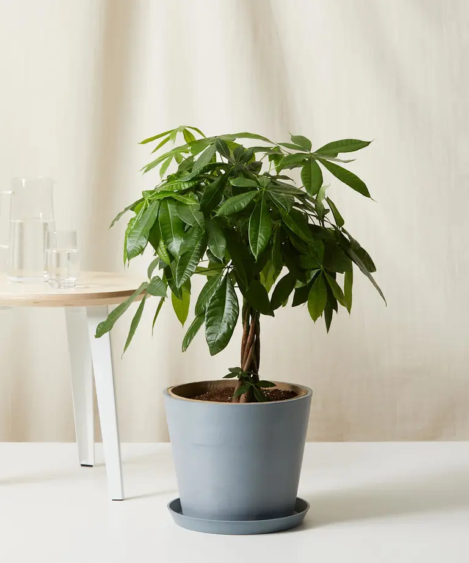
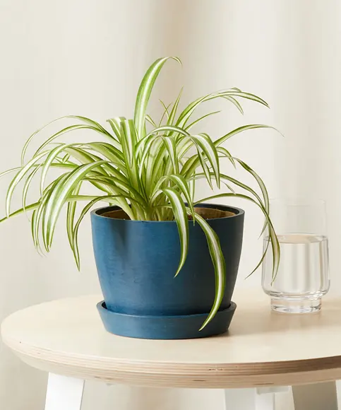

Money Tree
Buy $169, bloomscape.com
Money trees are one of the easiest houseplants you can grow - so they're perfect for new plant parents or people who have low levels of light in their homes. They're handsome plants, too, with a strong upright form, glossy leaves, and an attractive braided stem.
Spider Plant
Buy $49, bloomscape.com
Spider plants are one of the easiest houseplants to grow, even for beginners. It's also one of the most interesting. It likes medium to bright light throughout the year as well as average humidity and cool to average temperatures, although it can tolerate warmer conditions. It has long spider like leaves - hence the name.